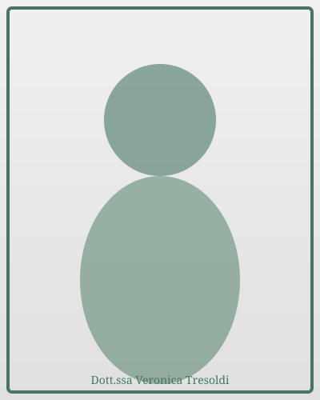

Valutazione neuropsicomotoria
Individua difficoltà nello sviluppo motorio, linguistico, cognitivo o relazionale del bambino attraverso osservazione e gioco.

Sono Veronica Tresoldi, terapista della neuro e psicomotricità dell'età evolutiva. Lavoro con bambini per favorire lo sviluppo motorio, cognitivo, relazionale ed emotivo. Attraverso percorsi su misura e giochi mirati, aiuto ogni bambino a esprimere il proprio potenziale. Supporto anche i genitori con consulenze pratiche e strumenti educativi efficaci.
Individua difficoltà nello sviluppo motorio, linguistico, cognitivo o relazionale del bambino attraverso osservazione e gioco.

Interventi su misura per promuovere le abilità del bambino attraverso attività ludiche e relazionali.

Consulenze pratiche per affrontare difficoltà educative e rafforzare la relazione genitore-figlio.
Veronica ha aiutato nostro figlio con grande professionalità e empatia. Il percorso di trattamento è stato personalizzato e abbiamo visto miglioramenti significativi. Consigliatissima!
Il supporto genitoriale di Veronica è stato fondamentale per noi. Ci ha dato strumenti concreti per gestire le difficoltà quotidiane e migliorare la relazione con nostra figlia. Grazie!
La valutazione è stata molto accurata e ci ha permesso di capire meglio le difficoltà di nostro figlio. Veronica è competente, paziente e sa come coinvolgere i bambini nel gioco.